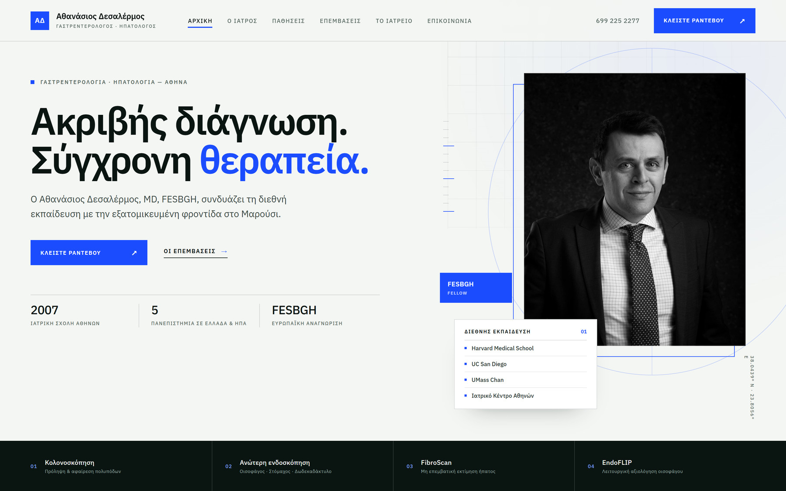
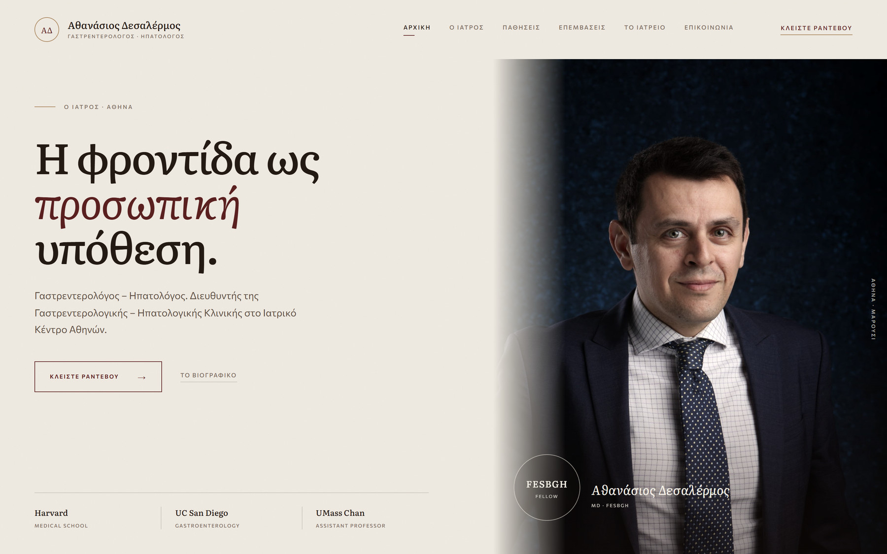
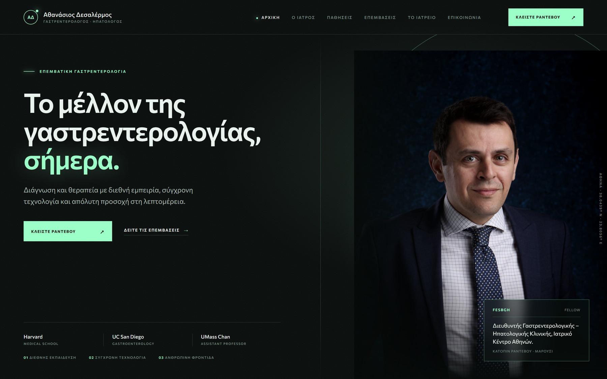
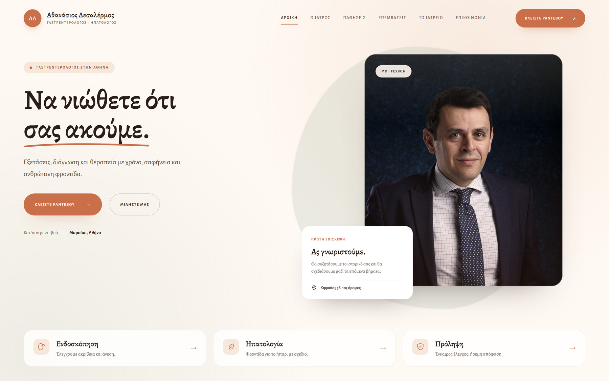
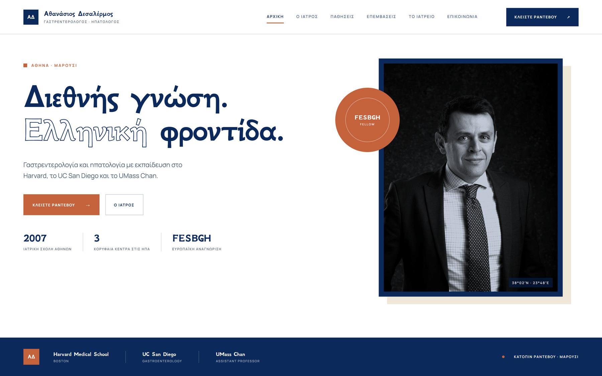

Σχεδιαστικές προτάσεις για μια ιστοσελίδα 2026 με διεθνή χαρακτήρα, ελληνική ταυτότητα και έμφαση στην ανθρώπινη φροντίδα.
Για τον Δρ. Αθανάσιο Δεσαλέρμο, MD, FESBGH
Για εσωτερική αξιολόγηση.
Τα κείμενα στα mockups είναι ενδεικτικά.
Η αφετηρία
Δεν ψάχνουμε ένα ακόμη ιατρικό template. Ψάχνουμε μια ψηφιακή παρουσία που να αντιστοιχεί στην πορεία του ιατρού: διεθνής εκπαίδευση, σύγχρονη πράξη, ελληνική έδρα. Πέντε διαφορετικές απαντήσεις στο ίδιο ερώτημα.
Το διεθνές βιογραφικό να γίνεται λόγος εμπιστοσύνης, όχι απαρίθμηση πτυχίων.
Οι παθήσεις και οι επεμβάσεις να εξηγούνται επιστημονικά και κατανοητά.
Τηλέφωνο, email, διεύθυνση και χάρτης σε κάθε οθόνη.
Έλληνες ασθενείς και διεθνές κοινό, χωρίς να χάνεται η ταυτότητα.
Να ξεχωρίζει από τα έτοιμα πρότυπα, χωρίς να θυσιάζει τη σοβαρότητα.
Οι πέντε κατευθύνσεις
Κλινική ακρίβεια, ακαδημαϊκός χαρακτήρας.
Ήρεμη πολυτέλεια, προσωπική σχέση.
Τεχνολογικό μέλλον, κινηματογραφικό ύφος.
Ανθρώπινη ζεστασιά, καθησυχαστική εμπειρία.
Ελληνικός μοντερνισμός, διεθνής αέρας.
Η επιστημονική αρτιότητα δεν χρειάζεται ψυχρότητα.
Χρειάζεται σαφήνεια.
Και οι πέντε προτάσεις μοιράζονται την ίδια αρχιτεκτονική περιεχομένου: Αρχική, Ο Ιατρός, Παθήσεις, Επεμβάσεις, Το Ιατρείο, Επικοινωνία. Αυτό που αλλάζει είναι η γλώσσα του σχεδιασμού — το ύφος, η τυπογραφία, το χρώμα και ο τρόπος που ο επισκέπτης σχηματίζει την πρώτη εντύπωση.
Η ακρίβεια ως εμπειρία.
Κλινική ακρίβεια
Ένα σύστημα εμπνευσμένο από ιατρικά περιοδικά και ερευνητικά εργαστήρια: αυστηρό πλέγμα, μονοχρωμία και μία μόνο ηλεκτρική απόχρωση. Το βιογραφικό παρουσιάζεται ως τεκμηρίωση — όχι ως διαφήμιση.
Ότι εργάζεται με μεθοδικότητα, μετρά τα αποτελέσματα και κινείται σε διεθνή επιστημονικά πρότυπα.
Ακαδημαϊκός · Μεθοδικός · Διεθνής
IBM Plex Sans · ετικέτες με αραιή στοίχιση
Σοβαρότητα, τάξη και διεθνές επίπεδο — πριν διαβαστεί μία λέξη.
Υψηλή αξιοπιστία, άριστη αναγνωσιμότητα, εύκολη επέκταση σε δεκάδες σελίδες.
Χρειάζεται ζεστασιά στη φωτογραφία και στον λόγο, για να μη γίνει ψυχρό.
Η διακριτικότητα ως πολυτέλεια.
Ήρεμη πολυτέλεια
Ζεστό χαρτί, μεγάλη serif τυπογραφία και φωτογραφία που αναδεικνύει το πρόσωπο. Λιγότερα στοιχεία, περισσότερος χώρος, μία ισχυρή εικόνα ανά ενότητα.
Ότι ο ασθενής αντιμετωπίζεται ως πρόσωπο, όχι ως περιστατικό — και ότι η εμπειρία είναι εξατομικευμένη.
Διακριτικός · Ζεστός · Προσωπικός
Literata · Commissioner
Ησυχία, προσωπική προσοχή και η αίσθηση ότι κάποιος περίμενε εσάς.
Ξεχωρίζει αμέσως, ταιριάζει σε απαιτητικό κοινό και δίνει βάρος στο πρόσωπο.
Χωρίς εξαιρετικές φωτογραφίες, η πρόταση χάνει μεγάλο μέρος της δύναμής της.
Το μέλλον, σε πρώτο πλάνο.
Τεχνολογικό μέλλον
Μαύρο φόντο, φως που αναδύεται και μια λεπτή γραμμή που θυμίζει ενδοσκόπηση. Η τεχνολογία γίνεται ατμόσφαιρα, χωρίς να χάνεται η σοβαρότητα.
Ότι βρίσκεται στην αιχμή της επεμβατικής γαστρεντερολογίας.
Τεχνολογικός · Τολμηρός · Μνημονικός
Commissioner · Plex Sans για ετικέτες
Ένα μέλλον που φαίνεται ήδη παρόν — και ένας άνθρωπος στο κέντρο του.
Πολύ μνημονικό· εξαιρετικό για διεθνές κοινό και παρουσιάσεις.
Μπορεί να φανεί λιγότερο προσβάσιμο σε ασθενείς μεγαλύτερης ηλικίας· απαιτεί άμεσο τηλέφωνο και καθαρή πλοήγηση.
Πρώτα ο άνθρωπος.
Ανθρώπινη ζεστασιά
Απαλές καμπύλες, ζεστά χρώματα και φωτογραφία που κοιτά τον ασθενή στα μάτια. Η πληροφορία οργανώνεται σε μικρά, κατανοητά βήματα.
Ότι η επίσκεψη θα είναι ήρεμη και ότι ο ασθενής θα ακουστεί.
Ανθρώπινος · Ήρεμος · Καθησυχαστικός
Alegreya · Alegreya Sans
Αμέσως πιο ήρεμα. Σαν να μειώνεται η απόσταση ανάμεσα σε γιατρό και ασθενή.
Μειώνει το άγχος· εξαιρετικό για τις σελίδες παθήσεων και για ασθενείς που διστάζουν.
Χρειάζεται προσοχή ώστε να μη χαθεί ο διεθνής και ακαδημαϊκός χαρακτήρας.
Διεθνής γνώση. Ελληνική φροντίδα.
Ελληνικός μοντερνισμός
Λευκό, βαθύ μπλε και τερακότα. Μεγάλα γράμματα, αυστηρές γραμμές και μια εικόνα που θυμίζει ελληνικό φως. Η ταυτότητα δεν αντιγράφει το εξωτερικό — το μεταφράζει.
Ότι η διεθνής εκπαίδευση δεν αποξενώνει από την ελληνική ρίζα· την ενισχύει.
Ελληνικός · Γεωμετρικός · Αισιόδοξος
GFS Neohellenic · Manrope
Υπερηφάνεια για τον τόπο, χωρίς ίχνος επαρχιωτισμού.
Το πιο διακριτό από τα πέντε· χτίζει ταυτότητα και τοπική συνάφεια.
Απαιτεί πειθαρχία στη γραφή και στις εικόνες, για να μη γίνει τουριστικό.
Σύγκριση
Η κλίμακα είναι ποιοτική, όχι αριθμητική. Κάθε πρόταση μπορεί να προσαρμοστεί· η επιλογή αφορά το χαρακτήρα που θέλετε να έχει η πρώτη εντύπωση.
| ATLAS | MARBLE | NOCTURNE | CARE | AEGEAN | |
|---|---|---|---|---|---|
| Τόνος | Ακαδημαϊκός | Διακριτικός | Τεχνολογικός | Ανθρώπινος | Πολιτισμικός |
| Κοινό | Διεθνές και ιατροί που παραπέμπουν | Απαιτητικό κοινό, ιδιωτική περίθαλψη | Νεότερο, τεχνολογικό | Αγχώδεις ασθενείς | Έλληνες και διεθνές κοινό |
| Μνημονικότητα | Μέτρια | Υψηλή | Πολύ υψηλή | Μέτρια | Υψηλή |
| Εμπιστοσύνη | Πολύ υψηλή | Υψηλή | Μέτρια–υψηλή | Υψηλή | Υψηλή |
| Συντήρηση | Εύκολη | Μέτρια | Μέτρια | Εύκολη | Μέτρια |
| Ρίσκο | Ψυχρό | Ελιτίστικο | Απόμακρο | Υπερβολική οικειότητα | Τουριστικό |
ATLAS
CARE ή MARBLE
NOCTURNE ή AEGEAN
Η πρότασή μου
Για έναν ιατρό με διεθνή καριέρα και ελληνική έδρα, η πρόταση ATLAS συνδυάζει την ακαδημαϊκή αξιοπιστία με μια σύγχρονη, καθαρή εμπειρία. Προτείνω να κρατήσουμε την ακρίβεια και το πλέγμα του ATLAS, να δανειστούμε τη φωτογραφία και τον χώρο του MARBLE και να προσθέσουμε τη γλώσσα και τη ζεστασιά του CARE.
Αν ο στόχος είναι μέγιστη διαφοροποίηση, η πρόταση AEGEAN είναι η πιο τολμηρή επιλογή — με ισχυρή ελληνική ταυτότητα και διεθνή αέρα.
Η πρόταση συνδυάζει τρία στοιχεία: το πλέγμα του ATLAS, τη φωτογραφία του MARBLE και τη γλώσσα του CARE.
Η επόμενη κίνηση: επιλέγουμε κατεύθυνση και ξεκινάμε.
09 / 10Επόμενα βήματα
Η επιλογή μιας κατεύθυνσης είναι η αρχή. Ακολουθεί ο σχεδιασμός τριών αντιπροσωπευτικών σελίδων, η γλωσσική επιμέλεια και η υλοποίηση.
Μία κύρια κατεύθυνση και, αν θέλετε, μία εναλλακτική.
Αρχική, Ο Ιατρός και μία αντιπροσωπευτική σελίδα πάθησης.
Κάθε ελληνικό κείμενο ελέγχεται λέξη προς λέξη, με ιατρική ορολογία και σωστή στίξη.
Πλήρης ιστοσελίδα, προσβασιμότητα, ταχύτητα και δοκιμές σε κινητά και υπολογιστές.
Ξεκινάμε με μία απόφαση.
Η παρούσα παρουσίαση είναι σχεδιαστική πρόταση. Τα κείμενα στα mockups είναι ενδεικτικά και θα οριστικοποιηθούν μετά την επιλογή κατεύθυνσης. Η κινητή εκδοχή θα σχεδιαστεί αναλυτικά στην επόμενη φάση, για την κατεύθυνση που θα επιλέξετε.